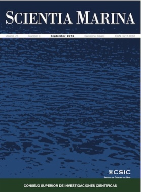

PUBLICATIONS
These are the main journals where you can find publications and articles related to dinoflagellates, concepts, taxonomy, identification, effects on the environment, among other aspects.
SCIMAGO JOURNAL RANK. The SJR is a size-independent prestige indicator that ranks journals by their 'average prestige per article'. It is based on the idea that 'all citations are not created equal'. SJR is a measure of scientific influence of journals that accounts for both the number of citations received by a journal and the importance or prestige of the journals where such citations come from It measures the scientific influence of the average article in a journal, it expresses how central to the global scientific discussion an average article of the journal is.
QUARTILES. The set of journals have been ranked according to their SJR and divided into four equal groups, four quartiles. Q1 (green) comprises the quarter of the journals with the highest values, Q2 (yellow) the second highest values, Q3 (orange) the third highest values and Q4 (red) the lowest values.
|
Geology |
Geology has been the Web of Science's #1 ranked "geology" journal for 12 years in a row. The journal Geology publishes timely, innovative, and provocative articles relevant to its international audience, representing research from all fields of the geosciences. Full-text available for all issues. |
|
Quaternary Science Reviews |
Quaternary Science Reviews caters for all aspects of Quaternary science, and includes, for example, geology, geomorphology, geography, archaeology, soil science, palaeobotany, palaeontology, palaeoclimatology and the full range of applicable dating methods. The dividing line between what constitutes the review paper and one which contains new original data is not easy to establish, so QSR also publishes papers with new data especially if these perform a review function. All the Quaternary sciences are changing rapidly and subject to re-evaluation as the pace of discovery quickens; thus the diverse but comprehensive role of Quaternary Science Reviews keeps readers abreast of the wider issues relating to new developments in the field. |
|
Harmful Algae |
This journal provides a forum to promote knowledge of harmful microalgae and macroalgae, including cyanobacteria, as well as monitoring, management and control of these organisms. Both original research and review papers will be considered. Papers dealing with the following aspects of harmful microalgae and cyanobacteria in marine and fresh waters will be considered: (1) The distribution, life histories and taxonomy of harmful microalgae; (2) The physiology and toxicology of harmful microalgae; (3) Harmful microalgal bloom ecology; (4) Trophic, socio-economic, public health and aquacultural impacts of harmful microalgal bloom events; (5) Occurrence, methods of detection and chemical structure of toxins in harmful microalgae, cyanobacteria, foodwebs and seafood; (6) Factors controlling toxin production, biosynthesis and chemical ecology. |
|
Progress in Oceanography |
Progress in Oceanography publishes the longer, more comprehensive papers that most oceanographers feel are necessary, on occasion, to do justice to their work. Contributions are generally either a review of an aspect of oceanography or a treatise on an expanding oceanographic subject. The articles cover the entire spectrum of disciplines within the science of oceanography. Occasionally volumes are devoted to collections of papers and conference proceedings of exceptional interest. Essential reading for all oceanographers. |
|
Science of the Total Environment |
Science of the Total Environment is an international multi-disciplinary journal for publication of novel, hypothesis-driven and high-impact research on the total environment, which interfaces the atmosphere, lithosphere, hydrosphere, biosphere, and anthroposphere. |
|
Oceanography |
First published in July 1988, Oceanography is the official magazine of The Oceanography Society. It contains peer-reviewed articles that chronicle all aspects of ocean science and its applications. In addition, Oceanography solicits and publishes news and information, meeting reports, hands-on laboratory exercises, career profiles, book reviews, and shorter, editor-reviewed articles that address public policy and education and how they are affected by science and technology. We encourage submission of short papers to the Breaking Waves section that describe novel approaches to multidisciplinary problems in ocean science. |
|
Sedimentary Geology |
Sedimentary Geology is a journal that rapidly publishes high quality, original research and review papers that cover all aspects of sediments and sedimentary rocks at all spatial and temporal scales. Submitted papers must make a SIGNIFICANT CONTRIBUTION to the field of study and must place the research in a BROAD CONTEXT , so that it is of interest to the DIVERSE, INTERNATIONAL READERSHIP of the journal. Papers that are largely descriptive in nature, of limited scope or local geographical significance, or based on limited data will not be considered for publication. |
|
Marine and Petroleum Geology |
Marine and Petroleum Geology is the pre-eminent international forum for the exchange of multidisciplinary concepts, interpretations and techniques for all concerned with marine and petroleum geology in industry, government and academia. Rapid bimonthly publication allows early communications of papers or short communications to the geoscience community. Marine and Petroleum Geology is essential reading for geologists, geophysicists and explorationists in industry, government and academia working in the following areas: marine geology; basin analysis and evaluation; organic geochemistry; reserve/resource estimation; seismic stratigraphy; thermal models of basic evolution; sedimentary geology; continental margins; geophysical interpretation; structural geology/tectonics; formation evaluation techniques; well logging. |
|
Palaeogeography, Palaeoclimatology, Palaeoecology |
Palaeogeography, Palaeoclimatology, Palaeoecology is an international medium for the publication of high quality and multidisciplinary, original studies and comprehensive reviews in the field of palaeo-environmental geology including palaeoclimatology. Please note that palaeogeographical and plate tectonic papers are considered to be outside the scope of the journal, and as such we kindly request that papers of this nature are not submitted. The journal aims at bringing together data with global implications from research in the many different disciplines involved in palaeo-environmental investigations. By cutting across the boundaries of established sciences, it provides an interdisciplinary forum where issues of general interest can be discussed. |
|
Marine Geology |
Marine Geology is the premier international journal on marine geological processes in the broadest sense. We seek papers that are comprehensive, interdisciplinary and synthetic that will be lasting contributions to the field. Although most papers are based on regional studies, they must demonstrate new findings of international significance. We accept papers on subjects as diverse as seafloor hydrothermal systems, beach dynamics, early diagenesis, microbiological studies in sediments, palaeoclimate studies and geophysical studies of the seabed. We encourage papers that address emerging new fields, for example the influence of anthropogenic processes on coastal/marine geology and coastal/marine geoarchaeology. We insist that the papers are concerned with the marine realm and that they deal with geology: with rocks and/or sediments now in the ocean (not on land), and physical and chemical processes affecting them. |
|
Marine Pollution Bulletin |
Marine Pollution Bulletin is concerned with the rational use of maritime and marine resources in estuaries, the seas and oceans, as well as with documenting marine pollution and introducing new forms of measurement and analysis. A wide range of topics are discussed as news, comment, reviews and research reports, not only on effluent disposal and pollution control, but also on the management, economic aspects and protection of the marine environment in general. |
|
Marine Ecology Progress Series |
MEPS is a leading ecological journal publishing research on all aspects of marine, coastal and estuarine ecology. MEPS coverage includes the whole spectrum of species, habitats, biological organisation (cells to ecosystems) and research (fundamental and applied). Priority is given to outstanding research that advances our ecological understanding. |
|
Radiocarbon |
Radiocarbon is the main international journal of record for research articles and date lists relevant to 14C and other radioisotopes and techniques used in archaeological, geophysical, oceanographic, and related dating. The journal is published six times a year, and we also publish conference proceedings and monographs on topics related to our fields of interest. Radiocarbon has been in publication since 1959. |
|
Quaternary International |
Quaternary International is the official journal of the International Union for Quaternary Research. The objectives are to publish a high quality scientific journal under the auspices of the premier Quaternary association that reflects the interdisciplinary nature of INQUA and records recent advances in Quaternary science that appeal to a wide audience. This series will encompass all the full spectrum of the physical and natural sciences that are commonly employed in solving Quaternary problems. The policy is to publish peer refereed collected research papers from symposia, workshops and meetings sponsored by INQUA. In addition, other organizations may request publication of their collected works pertaining to the Quaternary. |
|
Journal of Plankton Research |
The Journal of Plankton Research is a forum for papers that significantly advance the field of plankton research, and in particular our understanding of the wider role of plankton in ecosystem dynamics, ecology and evolution. |
|
Marine Micropaleontology |
Marine Micropaleontology is an international journal publishing original, innovative and significant scientific papers in all fields related to marine microfossils, including ecology and paleoecology, biology and paleobiology, paleoceanography and paleoclimatology, environmental monitoring, taphonomy, evolution and molecular phylogeny. The journal strongly encourages the publication of articles in which marine microfossils and/or their chemical composition are used to solve fundamental geological, environmental and biological problems. However, it does not publish purely stratigraphic or taxonomic papers. In Marine Micropaleontology, a special section is dedicated to short papers on new methods and protocols using marine microfossils. We solicit special issues on hot topics in marine micropaleontology and review articles on timely subjects. |
|
Biogeosciences |
Biogeosciences (BG) is a not-for-profit international scientific journal dedicated to the publication and discussion of research articles, short communications, and review papers on all aspects of the interactions between the biological, chemical, and physical processes in terrestrial or extraterrestrial life with the geosphere, hydrosphere, and atmosphere. The objective of the journal is to cut across the boundaries of established sciences and achieve an interdisciplinary view of these interactions. Experimental, conceptual, and modelling approaches are welcome. |
|
Phycologia |
Publishes international research on applied phycology and basic phycology, including biochemistry, developmental biology, physiology and systematics. |
|
Aquaculture |
The aim of Aquaculture is to publish and make available the highest quality international scientific contributions to aquaculture. The Journal publishes disciplinary, interdisciplinary and transdisciplinary aquaculture research. The scope of Aquaculture includes the traditional priorities of its sections, but also includes papers from non-traditional scientific areas such as sustainability science, social-ecological systems, ornamental, conservation and restoration related to aquaculture. |
|
Continental Shelf Research |
Continental Shelf Research publishes articles dealing with the biological, chemical, geological and physical oceanography of the shallow marine environment, from coastal and estuarine waters out to the shelf break. The continental shelf is a critical environment within the land-ocean continuum, and many processes, functions and problems in the continental shelf are driven by terrestrial inputs transported through the rivers and estuaries to the coastal and continental shelf areas. Manuscripts that deal with these topics must make a clear link to the continental shelf. Examples of research areas include: (1) Physical sedimentology and geomorphology; (2) Geochemistry of the coastal ocean (inorganic and organic); (3) Marine environment and anthropogenic effects; (4) Interaction of physical dynamics with natural and manmade shoreline features; (5) Benthic, phytoplankton and zooplankton ecology; (6) Coastal water and sediment quality, and ecosystem health; (7) Benthic-pelagic coupling (physical and biogeochemical); (8) Interactions between physical dynamics (waves, currents, mixing, etc.) and biogeochemical cycles; (9) Estuarine, coastal and shelf sea modelling and process studies. Emphasis is placed on interdisciplinary process-oriented contributions, and encouragement is given to the publication of the results of innovative experimental studies with the potential for upscaling and a broad contribution. Regional descriptions and data summaries are discouraged. |

Journal of Theoretical Biology |
The Journal of Theoretical Biology is the leading forum for theoretical perspectives that give insight into biological processes. It covers a very wide range of topics and is of interest to biologists in many areas of research, including: Brain and Neuroscience; Cancer Growth and Treatment; Cell Biology; Developmental Biology; Ecology; Evolution; Immunology; Infectious and non-infectious Diseases; Mathematical, Computational, Biophysical and Statistical Modeling; Microbiology, Molecular Biology, and Biochemistry; Networks and Complex Systems; Physiology; Pharmacodynamics; Animal Behavior and Game Theory. |
|
Journal of Oceanography |
The Journal of Oceanography is the official journal of the Oceanographic Society of Japan and open to all oceanographers in the world. The main aim of the journal is to promote understandings of ocean systems from various aspects including physical, chemical, biological, geological oceanography as well as paleoceanography, etc. The journal welcomes research focusing on the western North Pacific and Asian coastal waters, but the study region is not limited to the Asian Pacific. The journal publishes original articles, short contributions, reviews, and correspondence in oceanography and related fields. |
|

Scientia Marina |
Scientia Marina is a scientific journal published by CSIC and edited by the Institut de Ciències del Mar that publishes original papers, reviews and comments concerning research in the following fields: (1) Marine Biology and Ecology; (2) Fisheries and Fisheries Ecology; (3) Systematics, Faunistics and Marine Biogeography; (4) Physical Oceanography; (5) Chemical Oceanography; (6) Marine Geology. Emphasis is placed on articles of an interdisciplinary nature and of general interest. |
|
European Journal of Protistology |
Articles deal with protists, unicellular organisms encountered free-living in various habitats or as parasites or used in basic research or applications. The European Journal of Protistology covers topics such as the structure and systematics of protists, their development, ecology, molecular biology and physiology. Beside publishing original articles the journal offers a forum for announcing scientific meetings. Reviews of recently published books are included as well. With its diversity of topics, the European Journal of Protistology is an essential source of information for every active protistologist and for biologists of various fields. |
|
Eukaryotic Microbiology |
The Journal of Eukaryotic Microbiology publishes original research on protists, including lower algae and fungi. Articles are published covering all aspects of these organisms, including their behavior, biochemistry, cell biology, chemotherapy, development, ecology, evolution, genetics, molecular biology, morphogenetics, parasitology, systematics, and ultrastructure. |
|
Palynology |
Palynology was first published in 1977, and is now is a well-established, international journal covering all aspects of the science of organic microfossils and their modern counterparts. We accept papers on both pre-Quaternary and Quaternary palynology, and palaeobotany. Articles across the entire range of palynomorph groups and geological ages are welcomed. Contributions on both the traditional aspects of the subject, and the more novel uses of palynology, are all actively encouraged. We accept suitable manuscripts on, for example, actuopalynology, archaeological palynology, biostratigraphy, floral history, forensic palynology, mellitopalynology and taxonomy. Additionally, book reviews, review articles, papers on methodology and short monographs would all fall within the scope of this journal. The high quality of illustrative material has always been a characteristic of Palynology. |
|
Protist |
Protist is the international forum for reporting substantial and novel findings in any area of research on protists. The criteria for acceptance of manuscripts are scientific excellence, significance, and interest for a broad readership. Suitable subject areas include: molecular, cell and developmental biology, biochemistry, systematics and phylogeny, and ecology of protists. Both autotrophic and heterotrophic protists as well as parasites are covered. The journal publishes original papers, short historical perspectives and includes a news and views section. |
|
Environmental Science and Pollution Research |
Environmental Science and Pollution Research (ESPR) serves the international community in all areas of Environmental Science and related subjects with emphasis on chemical compounds. It reports from a broad interdisciplinary outlook. Apart from the strictly scientific contributions as research articles (short and full papers) and reviews, ESPR publishes: news & views from research and technology, legislation and regulation, hardware and software, education, literature, institutions, organizations, conferences. |
|
Journal of African Earth Sciences |
The Journal of African Earth Sciences sees itself as the prime geological journal for all aspects of the Earth Sciences about the African plate. Papers dealing with peripheral areas are welcome if they demonstrate a tight link with Africa. |
|
Ocean Science Journal |
Ocean Science Journal (OSJ) is an international journal whose aim is to achieve the advancement and dissemination of information in the field of oceanography. The journal is committed to the publication of original research articles, reviews and notes on all fields of oceanography including physical oceanography, biological oceanography/marine biology, chemical oceanography/marine chemistry, geological oceanography/marine geology, and marine pollution. Ocean Science covers the following fields: Physical oceanography: waves, currents, air-sea interaction, ocean modeling, coastal processes, water masses; Biological oceanography/marine biology: plankton, benthic organisms, fish, ecology, molecular biology; Chemical oceanography/marine chemistry: Trace elements, Isotopes, Nutrients, Organic substances, Gases; Geological oceanography/marine geology: geophysics, sedimentology, paleontology, paleogeopraphy, sediment dynamics; Marine pollution: pollutants analysis and monitoring, fates of contaminants, aquatic toxicology, ecotoxicology. Promotes all aspects of ocean science, experimental, theoretical and laboratory researches. |
|
Developments in Marine Geology |
Developments in Marine Geology is a book series designed to provide a comprehensive source of detailed information on all aspects of marine geology, geochemistry and geophysics. The series encompasses the entire range of the discipline from field and laboratory techniques to regional synthesis of marine sedimentary systems. Topics include subjects as diverse as seafloor hydrothermal systems, beach dynamics, early digenesis microbiological studies in sediments, paleoclimate studies and geodynamics investigations on the ocean and sea floor. Proposals should concern the marine realm and deal with geology, rocks, sediments, and the physical and chemical processes affecting them. |
|
Journal of Sea Research |
The Journal of Sea Research is an international and multidisciplinary periodical on marine research, with an emphasis on the functioning of marine ecosystems in coastal and shelf seas, including intertidal, estuarine and brackish environments. As several subdisciplines add to this aim, manuscripts are welcome from the fields of marine biology, marine chemistry, marine sedimentology and physical oceanography, provided they add to the understanding of ecosystem processes. |
|
Developments in Paleoenvironmental Research |
Paleoenvironmental research continues to enjoy tremendous interest and progress in the scientific community. The overall aims and scope of the Developments in Paleoenvironmental Research book series is to capture this excitement and document these developments. Volumes related to any aspect of paleoenvironmental research, encompassing any time period, are within the scope of the series. For example, relevant topics include studies focused on terrestrial, peatland, lacustrine, riverine, estuarine, and marine systems, ice cores, cave deposits, palynology, isotopes, geochemistry, sedimentology, paleontology, etc. Methodological and taxonomic volumes relevant to paleoenvironmental research are also encouraged. The series will include edited volumes on a particular subject, geographic region, or time period, conference and workshop proceedings, as well as monographs. |
|
Review of Palaeobotany and Palinology |
The Review of Palaeobotany and Palynology is an international journal for articles in all fields of palaeobotany and palynology dealing with all groups, ranging from marine palynomorphs to higher land plants. Original contributions and comprehensive review papers should appeal to an international audience. Typical topics include but are not restricted to systematics, evolution, palaeobiology, palaeoecology, biostratigraphy, biochronology, palaeoclimatology, paleogeography, taphonomy, palaeoenvironmental reconstructions, vegetation history, and practical applications of palaeobotany and palynology, e.g. in coal and petroleum geology and archaeology. The journal especially encourages the publication of articles in which palaeobotany and palynology are applied for solving fundamental geological and biological problems as well as innovative and interdisciplinary approaches. |